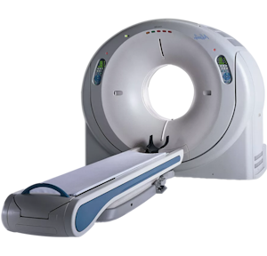

Комп'ютерна томографія (КТ) головного мозку або КТ голови – це сучасний метод діагностики, який використовує
рентгенівське випромінювання та комп'ютерне обладнання, із застосуванням мультипланарної реконструкції для створення
докладних зображень внутрішніх структур головного мозку. У нашому кабінеті Комп'ютерної Томографії “Діагностикум” ми
використовуємо апарат Philips MX 8000 IDT, який дозволяє робити одночасно 16 зрізів у високій роздільній здатності та
ізотропному зображенні. Це дозволяє отримати об'ємні зображення мозку з можливістю одержання пошарових знімків. Для
лікаря - це точні і детальні дані про стан пацієнта.
Комп'ютерна томографія голови у Бердичеві, безпечна та не викликає хворобливих відчуттів. Наші фахівці ретельно
контролюють дозу рентгенівського проміння, щоб мінімізувати ризик випромінювання.

Переваги комп'ютерної томографії (КТ)
Перевага КТ голови над іншими методами дослідження (звичайний рентген, МРТ) полягає у її швидкості, точності та
доступній ціні. Комп'ютерна томографія може бути проведена швидко, результати діагностики виходять майже миттєво.
Основні переваги комп'ютерної томографії:
Комп'ютерна томографія (КТ) – це комфортний метод. Сама процедура є безболісною та неінвазивною.
КТ – швидкий метод дослідження у реальному часі. Наприклад: КТ дозволяє отримати одночасно зображення кісток, органів,
м'яких тканин та кровоносних судин.
Комп'ютерна томографія (КТ) – точний метод. При дослідженні одержують детальні зображення всіх видів тканин у кількох
зрізах, що неможливо отримати при звичайному рентгенівському дослідженні. На відміну від МРТ, комп'ютерна томографія
менш чутлива до рухів пацієнта та різноманітних імплантів (якщо такі є).
Показання до проведення дослідження головного мозку
КТ головного мозку допомагає виявити запальні процеси, пухлини головного мозку, крововиливи та наслідки черепно-мозкових
травм (ЧМТ).
- підозра на набряк, запалення, крововилив після ЧМТ;
КТ голови (КТ головного мозку) не вимагає спеціальної підготовки з боку пацієнта, хіба що вас попросять зняти з себе
металеві предмети перед процедурою, оскільки вони можуть заважати отриманню чіткого зображення. І якщо необхідна
процедура КТ з додатковим контрастом – варто утриматися від їди за 2-3 години до проведення КТ.
Під час проведення процедури пацієнт лежить на спеціальному столі, вміщеному всередину кільцевого апарату, що
обертається навколо нього. При обертанні рентгенівські промені проходять через голову пацієнта і реєструються
детектором. Отримані дані передаються на комп'ютер, який перетворює їх на відповідні зображення.
Проведення комп'ютерної томографії головного мозку в кабінеті КТ “Діагностикум” у Бердичеві має кілька переваг:
У нас працює спеціалізована команда професіоналів, які мають великий досвід у цій галузі.
Наш кабінет оснащений обладнанням Philips MX 8000 IDT від всесвітньо відомого лідера з виробництва медичного обладнання,
що гарантує якість та точність результатів.
Ми також пропонуємо зручний графік прийому та доступні ціни, щоб зробити процедуру КТ головного мозку максимально
комфортною для пацієнтів.
У нашому кабінеті КТ “Діагностикум” ви можете бути впевнені у якісно та професійно проведеній процедурі Комп'ютерної
Томографії головного мозку.
Вартість КТ головного мозку
Послуга
Ціна, грн
КТ головного мозку
1000
КТ головного мозку з внутрішньовенним контрастуванням